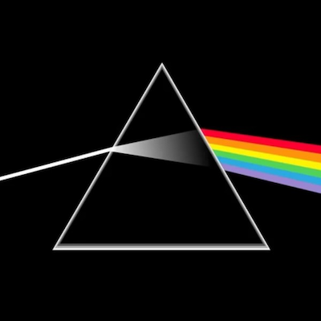
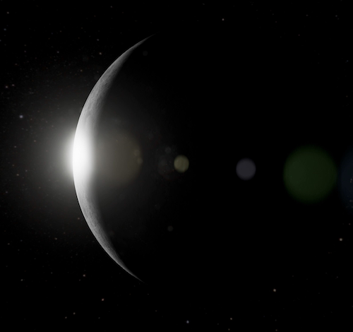

I am a fan of rock n' roll and I listen to different kinds of rock music. Due to the enormous amount of genres and great bands in rock, I am not sure how much I know about this kind of music. However, one thing I am sure is that my favorite band is and will always be Pink Floyd. My favorite PF song is Shine on your crazy diamonds. Just as the picture suggests (though it is for a different album), this song makes me think of outerspaces, immense darkness, and immense purity. This song also makes me realize the importance of silence in music with its charming soundfree in between the major riffs.